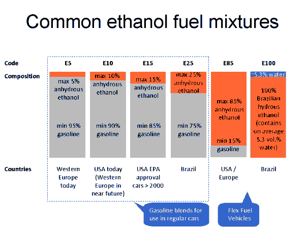
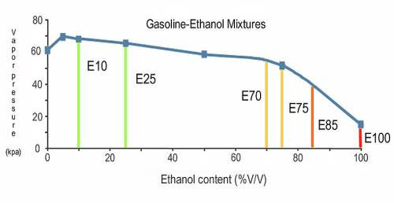
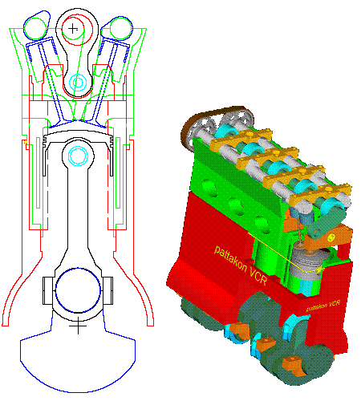
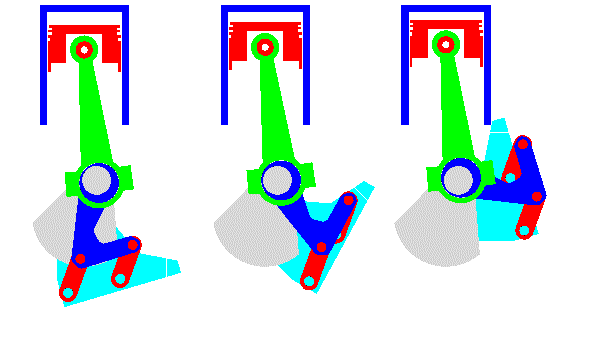
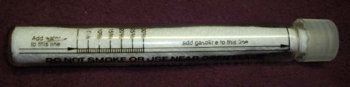

GASOHOL

thou hast made us to drink the wine of astonishment."
Psalm 60:3
The EPA and all the Green Environmentalists seem to think Gasohol is just the greatest thing around. Astonishingly, or perhaps not, the truth is a bit different from what the powers that be say it is.
Story time! About thirty years ago I was, like always, making a big push to save money. I was reading about the all the supposedly great virtues of running alcohol in my car and motorcycle engines. It was really very easy. At the time, the government permits were cheap and man has been making booze for many thousands of years. What could possibly go wrong?
So I bought a bunch of do-it-yourself books from Mother Earth News. I was just about to start buying the tubes and tanks and everything else when the truth hit me. While Gasohol can work on a very small scale, there are just too many problems they do not tell you about.
- Alcohol only has about 66% of the energy of an equal amount of Gasoline. One US gallon of gasoline contains 114,000 BTU's of energy. One US gallon of Ethanol only has 76,100 BTU's of energy per gallon. When you use an Alcohol/Gasoline mix you will lose gas mileage.
Yes, yes, I know the MythBusters said you get lots of power running with pure Moonshine but...?
- If you use straight Alcohol you must rejet your carburetors or remap your fuel injectors to run 40% richer. Otherwise your fuel/air mix will run way too lean.
- All the hoses, carburetors, gas tanks, everything that the Alcohol touches must be specifically made for Alcohol.
- To fully utilize what power it has, Alcohol has to have a high compression engine. Alcohol is knock free. That means you can have very high compression ratios without any detonation. This is why you see SpeedWay bikes and Indianapolis 500 engines using Alcohol. SpeedWay engines have very high compression ratios and the Indy engines have high boost from their Turbo and Super Chargers which effectively raises the compression ratio. More compression equals more power.
If you have these high compression ratio engines you cannot run Gasoline because it will detonate and destroy the engine.
- Alcohol loves water and will suck it right out of the atmosphere. This causes all kinds of problems. Rust in gas tanks and stuff like that. When they first came out with Gasohol they found that if you used it in two stroke engines it sometimes would suck in moisture from the two stroke fuel mix, and drop to the bottom of the gas tank. The fuel/oil mix would float on top of the Water/Alcohol mix. Then the Water/Alcohol mix with no oil would be burned in the engine. NO OIL going to the crank and piston on a two stroke engine produces an engine that goes BOOM.
- Gasohol costs more to produce then Gasoline. The only reason it does not cost more at the pump is because it is heavily subsidized by the government.
- Unintended consequences. By using all this cheap corn for Gasohol we cut off food from many poor countries who used to buy our cheap corn. Nothing like contributing to world hunger so we can be Green and politically correct. Sort of like all those Wind Towers killing birds and bats like crazy.
One of my Yamaha shop manuals tells us that there are two types of Gasohol. Gasohol containing Ethanol and Gasohol containing Methanol. Yamaha says Methanol can cause problems. You can use Ethanol but do not exceed 10% (E-10). Some newer car engines are made to run Gasohol in mixtures of up to 85% (E-85) but it seems you can't go much higher then that for a variety of reasons. One of which is hard cold starting with high Ethanol/Gasoline ratios because of low vapor pressures. In other words the stuff just will not vaporize to burn at low temperatures so it will not start the engine in winter.

The EPA tried to raise the percentage of Alcohol in our fuel this year (2014) to 15% (E-15) but enough engine manufacturers complained about it that they stopped.
Because of all these problems I decided not to make and try to use Ethanol as a fuel. But Dan, you say, we are using Gasohol right now, are we not? Yes, we are and the EPA wants us to use more. However, Gasohol will NEVER replace Gasoline because we simply can't grow enough corn or beans to produce enough Ethanol to fuel all our engines. Why? We have enough land to grow it and we have enough seeds but we do not have enough water to even come close to producing enough for our needs. Bottom line is this. Gasohol is not a workable solution to our energy problems unless we develop a variable compression ratio (VCR) engine which Honda and others were working on a few years back. However, even if we had the right engine we still don't have enough water.
 Pattakon Engine |
 Pattakon Crank |

This is a Gasohol tester. You can get one from Amazon.com for ten-fifteen dollars. You can make one using a 6 inch long by 3/4 inch diameter test tube. Make a line one and a quarter inch (1.25") up from the bottom of the test tube. This is the water line. Make another line five inches up from the bottom of the test tube. This is the Gas line. Fill the test tube to the Water line with Water (Duh!) Now fill the test tube with Gasoline to the Gas line (double Duh). Now shake the test tube to mix the Water and Gas. Oops! Clean yourself up and refill the test tube with more Water and Gas. Cap the test tube this time. Good thing you weren't smoking right? Shake it again.
Let it stand there for ten minutes.
Look at the tester and locate the Water/Gasoline separation line. If the line in the fluid is above the water line you have Alcohol in your fuel.
If it is about .19" above the Water line you have 5% Gasohol (E-5).
.38" above the Water line-10% (E-10).
.56"-15% (E-15)
.76"-20% (E-20)
.95"-25% (E-25)
1.15"-30% (E-30)
Et cetera, Et cetera.
You get the Idea and please don't go E-mailing me that my math is not spot on. All of this is very approximate, give or take, up or down, right or left, whatever. This just gives you a general idea of how much Alcohol is in your gas.
All the Greenies in the world wanting it so will not make it so. We just do not have enough water to grow the beans to make it.
In reality, Gasohol is a dead horse and it is just starting to smell.
 |
 |
Copyright © 1999-2015 dansmc.com. All rights reserved.